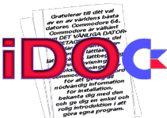

Alternativa format
iDOCs alternativa format
[Svenska]
Commodore 64 användarmanual
[HTML]
[text]
[Tyska]
Commodore 64 Bedienungshandbuch
[homepage]
[PDF]
[text]
[Tyska]
VC 1541 Bedienungshandbuch
[text]
[Engelska]
CBM 500/600/700 series user's guide
[JPEGs]
[Engelska]
CBM 8296 supplement to the 8032 manual
[HTML]
[text]
[Engelska]
Commodore 128 User's Manual
[HTML]
[text]
Dokument på andra platser
[Engelska]
Commodore 64 Programmer's Reference Guide
[HTML]
Återgå till iDOC=
|
Softwolves CBM-sida
|
Peters hemsida
Peter Krefting
peter@softwolves.pp.se